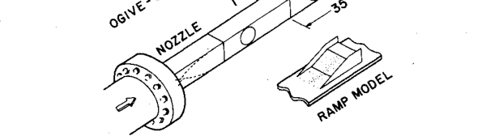
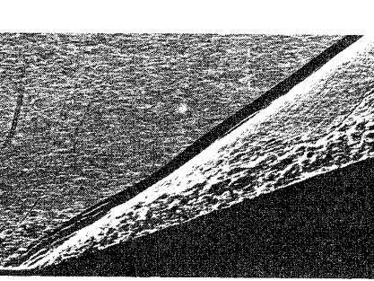
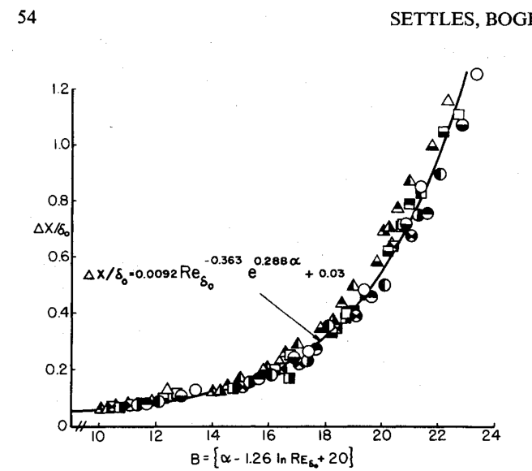
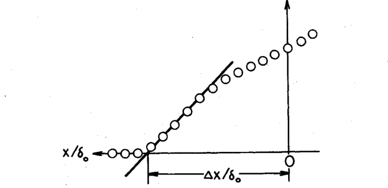

01中文摘要
用二维压缩拐角和轴对称锥裙研究激波与可压缩湍流边界层的干扰，马赫数 2.9，雷诺数范围 10⁵<Re_δ0<10⁷（Re_x 达 10⁹）。对若干拐角角获得详细的表面压力、纹影和油流数据。主要结论是初始分离为渐变而非突变现象：初始分离拐角角位于约 16°–18° 的带内，并在研究范围内基本与雷诺数无关。
02阅读说明
实验研究（高速风洞实验，含半经验数据拟合，无理论推导）。AIAA Journal 1976, 14(1): 50–56，共7页；bundle 全文完整（PAGE 1–7），已抓图7项。Table 1/2 的 OCR 有缺损（部分 δ0、cf0 数字不可辨），Fig. 3/5/6/8/9 未提供裁剪图，只能依据正文与图注；Fig.10 图内拟合式已用 PDF 第5页核对。信息完整度较高，定量结论主要取自正文、表1/2、图8–11。 文章类型：期刊
03一句话核心与三句话摘要
M2.9、Reθ0=0.5–7.6×10^6 下，湍流边界层起始分离角为15°–18°且不随Re变化。
- Mach 3 附近压缩拐角起始分离角 αi 随 Re 的变化趋势及判定判据，在已有实验中相互矛盾：Kuehn 报告随 Reθ0 增大而减小，Roshko & Thomke 与 Law 报告高 Re 下趋势反转/上升，Settles & Bogdonoff、Rose 等则称无 Re 效应，Spaid & Frishett 又对低 Re 判据提出疑问（p.50）。 AI概括
- 在 Princeton 8×8 in 吹风洞中用 10°–20° 二维斜坡与轴对称 flare，于 M≈2.9、Reθ0=0.5×10^6–7.6×10^6、近绝热壁下测静压、纹影/阴影与油流；多判据给出 αi 落在 15°–18° 带内，且在所研究 Re 范围内无 Re 依赖（p.55–56, Fig.11）。 原文明确
- 起始分离是渐变而非突变：低角名义附着流中已嵌入毫米级分离区，传统“壁面剪应力局部降为零”的定义被放弃；把分离长度或上游影响长度外推到零来求 αi 不可靠（p.54–56）。 原文明确
04核心内容清单
| 要点 | 类型 | 重要性 | 原文依据 | 属性 |
|---|---|---|---|---|
| 起始分离角 αi 落在约 15°–18° 的带内，具体值取决于判据，但在所研究 Re 范围内与 Re 无关。 | 主要结论 | A | p.55–56, Fig.11, §V 结论(1)(2) | 原文明确 |
| 起始分离是渐变而非突变：上游影响与分离长度随 α 的曲线没有尖锐折点。 | 主要结论 | A | p.54 §IV.A, Fig.9–10; p.56 §V | 原文明确 |
| 即使 α=10° 的名义附着流，拐角内也已存在约 1 mm 量级的微小分离区，故传统“剪应力局部为零”的定义被放弃。 | 现象/定义 | A | p.52 §III.C; p.54–55 §IV.C | 原文明确 |
| 上游影响长度 Δx/δ0 随 Re 增大而减小，在 M≈2.9 的中高 Re 下与已有研究一致。 | 定量趋势 | A | p.53, Fig.8 | 原文明确 |
| Δx/δ0 随拐角近似指数增长；以 B=[α−1.26 ln Reθ0]/20 作横坐标可把斜坡数据坍缩为一条指数曲线。 | 半经验标度 | A | p.54, Fig.10 | 原文明确 |
| 分离长度随 α 增大，并在 16°–18° 明显上翘；以 Asep/δ0=0.1 作为“显著分离”的任意阈值可给出 αi。 | 判据 | A | p.54 §IV.C.1, Fig.6 | 原文明确 |
| 18° 斜坡纹影呈主激波与分离（诱导）激波的雙激波结构，类似双角斜坡无粘流；分离区竖向尺度很小。 | 流场结构 | B | p.52 §III.B, Fig.4 | 原文明确 |
| 低角下 ramp 与 flare 的上游影响在相同 Reθ0 重合，支持 ramp 数据的二维性；大分离时 flare 不再可比。 | 验证 | A | p.53–54 §IV.A–B | 原文明确 |
| 拐角压力判据与孔板读数判据对小幅分离不敏感，给出偏高的 αi；kink 判据给出 15°–16°，油流/分离激波判据给出 16°–18°。 | 判据比较 | A | p.55 §IV.C.2–5 | 原文明确 |
| Re 升高使上游影响和分离长度减小，但 αi 不变，因此“由上游影响外推 αi”会得到虚假的上升趋势。 | 机制/推论 | A | p.55 §IV.C.5; p.56 §V 观察(2)(6) | 原文明确 |
| 三段可互换试验段与宽 p_t0 范围使同一 Re 可由不同 x 与 p_t0 组合达到，覆盖大型高速飞行器的 Re 水平。 | 实验能力 | B | p.51 §II.A | 原文明确 |
| 与 Law、Roshko & Thomke 的分歧在很大程度上是判据与数据处理解释的差异，而非测量本身。 | 评述 | B | p.55 §IV.C.5 | 原文明确 |
05引言：研究问题与领域缺口
压缩拐角与轴对称 flare 引起的激波-湍流边界层干扰中，起始分离角 αi 对高速飞行器、叶轮机等设计重要，但湍流边界层在强逆压梯度下的行为缺乏可靠理论，只能依赖实验。领域缺口：Kuehn（NASA Memo 1-21-59A）得到 αi 随 Reθ0 增大而减小；Roshko & Thomke、Law 在更高 Re 下报告趋势反转或上升；Settles & Bogdonoff、Rose 等报告无 Re 效应；Spaid & Frishett 对低 Re 下的既有起始分离条件提出疑问。作者认为部分分歧可追溯到判定起始分离的实验方法不同，但对现象本身的认识仍不足。研究目标：利用可在三个试验段位置安装模型、从而以两种方式达到同一 Re 并覆盖宽 Re 范围的 8×8 in 风洞，获取尺度远小于一个边界层厚度的详细数据，用统一框架比较多类判据，澄清 M≈2.9、中高 Re 下 αi 的水平与 Re 趋势。隐含前提：二维斜坡与轴对称 flare 在附着/起始分离阶段可局部视为等价，从而互为二维性校验（p.50–51）。
06流动条件与几何构型
| 项目 | 数值/描述 | 依据 | 备注 |
|---|---|---|---|
| 来流马赫数 M∞ | 标称 2.9；三个试验段实测为 2.95（Sec.1）、2.89（Sec.2）、2.84（Sec.3） | p.51 §II.A; Table 1–2 | |
| 总压 p_t0 | 风洞能力 50–500 psia；本实验 60、100、200、300、400、500 psia | p.51 §II.A; p.52 §III.A.1 | |
| 总温 T_t0 | 约环境温度（about ambient stagnation temperature） | p.51 §II.A | |
| 壁温条件 | 近绝热壁（near adiabatic wall conditions） | p.51 §II.A; p.56 §V | |
| 单位雷诺数 Re/in（斜坡） | 1.00×10^6–7.90×10^6 /in（Table 1） | Table 1, p.52 | |
| 单位雷诺数 Re/in（flare） | 0.90×10^6–4.40×10^6 /in（Table 2, tap 20） | Table 2, p.52 | |
| 动量厚度雷诺数 Reθ0（斜坡） | 0.52×10^6–7.64×10^6（Table 1） | Table 1, p.52; p.56 §V | |
| 动量厚度雷诺数 Reθ0（flare） | 0.137×10^6–0.592×10^6（Table 2, tap 20） | Table 2, p.52 | |
| 基于 x 的雷诺数 Re_x | 0.4×10^8–9×10^8（风洞壁面实验）；中心体 stinger 实验 Reθ0=0.14×10^6–0.6×10^6 | p.51 §II.A | |
| 斜坡角 α | 10°、14°、16°、18°、20°（共5个模型） | p.51 §II.B.1 | |
| flare 角 α | 10°–20°，每 2° 一档（Fig.3 示例） | p.52 §III.A.2 | |
| 斜坡几何 | 宽 6 in；两侧各 1 in 旁路；侧挡板隔离角区；47 个静压孔，孔径 0.032 in，拐角附近孔距最小 0.036 in | p.51 §II.B.1 | |
| 轴对称模型几何 | 6 in 长卵形头 + 2 in 直径圆柱；flare 距尖端 14 in；该处 δ<15% 体半径 | p.51 §II.B.2 | |
| 边界层厚度 δ0（斜坡） | 0.416–1.185 in（Sec.1 最薄、Sec.3 最厚） | Table 1, p.52 | |
| 边界层厚度 δ0（flare, tap 20） | 0.1405–0.1515 in | Table 2, p.52 | |
| 边界层状态 | 完全湍流、平衡态（与 Law of the Wall and Wake 对比良好）；未人工转捩 | p.52 §III 开头 | |
| 几何维度 | 二维压缩拐角（ramp）与轴对称 flare 两套；flare 在附着/起始分离阶段按局部二维处理 | p.50 摘要; p.53–54 §IV.B | |
| 试验时间 | 30 s 至数分钟（随 p_t0） | p.51 §II.A | |
| 来流湍流度/噪声 | 文中未提及 | p.51–52 |
07核心现象与关键参数
| 参数 | 定义 | 数值 | 关系/说明 | 依据 |
|---|---|---|---|---|
| 起始分离角 αi | 分离开始变得显著（而非剪应力首次局部为零）时的拐角/偏转角 | 15°–18°（油流/分离激波 16°–18°，kink 15°–16°，拐角压力判据偏高）；随判据变化，与 Re 无关 | Fig.11 中 αi 对 Reθ0 近似水平带 | p.55–56, Fig.11 |
| 上游影响参数 Δx/δ0 | 对拐角前压力分布最大斜率作切线，外推到 x/δ0 轴所得的截距，用入口 δ0 归一化 | 随 α 近似指数增长、随 Re 减小；α=10°–24° 范围 | Fig.7 定义；Fig.8 对 Re；Fig.9 对 α | p.53–54, Fig.7–9 |
| 坍缩横坐标 B | B=[α−1.26 ln Reθ0]/20，用于把不同 Re 的 Δx/δ0–α 曲线水平平移 | Fig.10 横轴 0–24 | B 把斜坡数据坍缩到单一指数曲线 | p.54, Fig.10 |
| 指数拟合式 | Fig.10 图内给出的 Δx/δ0 与 Reθ0、α 的拟合关系 | 图面读取为 Δx/δ0=0.0092 Reθ0^0.363 exp(0.088α+0.03)；末项常数辨识受限，精确形式需回原文核对 | 配合 B 的横向平移使用 | p.54, Fig.10 图内标注（PDF 第5页核对） |
| 归一化分离距离 Asep/δ0 | 油流分离线到压缩拐角的距离除以入口 δ0 | 随 α 增大；以 Asep/δ0=0.1 作为显著分离的任意阈值 | 用于给出 αi 的带宽 | p.52–54, Fig.6 |
| 拐角摩擦系数 cf0 | 入口处壁面摩擦系数 | 斜坡 0.00090–0.00140；flare 约 0.00129–0.00151（OCR 部分缺损） | 随 Re 增大而减小（Table 1） | Table 1–2, p.52 |
| 压力归一化 | p/p0，p0 为拐角上游壁面静压 | 拐角后趋近无粘理论压力比 | Fig.2–3 纵轴 | p.52 §III.A.1 |
| 流向归一化 | x/δ0，x 自压缩拐角起算 | 拐角附近测点可密至 Δx/δ0≈0.03（按 0.036 in 孔距与 δ0 估算） | Fig.2–3 横轴；用于分辨 kink | p.52 §III.A.1（AI推断：由孔距与 δ0 估算） |
| 分离激波角 | 分离（诱导）激波相对来流的角度 | 随 α 增大而出现并增强；定量角度文中未给出 | 首次出现被用作 αi 判据，落在 16°–18° | p.52 §III.B; p.55 §IV.C.2 |
08方法与数据
设备：Princeton 大学高 Re 8×8 in 吹风洞，标称 M=2.9，p_t0=50–500 psia（本实验 60/100/200/300/400/500 psia），总温近环境温度，试验时间 30 s 至数分钟；喷管后接三段可互换等截面试验段，模型可装在距喉道三个不同位置，用“大 x+小 p_t0”或“小 x+大 p_t0”交叉同一 Re（p.51）。模型：黄铜二维斜坡，角 10°、14°、16°、18°、20°，宽 6 in，两侧各留 1 in 让侧壁边界层旁路，并加侧挡板隔离角区、防止分离时溢流；每个模型约 47 个直径 0.032 in 静压孔，拐角附近孔距最小 0.036 in。轴对称 ogive-cylinder-flare：6 in 长卵形头平滑接 2 in 直径圆柱，flare 装在距尖端 14 in 处，该处边界层厚度小于体半径的 15%。测量：表面静压、直接阴影或纹影、煤油-石墨表面油流（试验后胶带转印到白纸保存）。边界层：与 Law of the Wall and Wake 对比良好，判定为完全湍流、平衡态；来流平均速度剖面由前期风洞校准与 ogive 模型测量给出（p.51–52）。数据处理：压力用上游壁面静压 p0 归一化，流向距离用入口 δ0 归一化；x/δ0=0 处的点即拐角内实测压力。测量不确定度、采样率、重复性文中未提及。
| 项目 | 内容 | 依据 | 备注 |
|---|---|---|---|
| 风洞与 Re 调节 | Princeton 8×8 in 吹风洞；三段等截面试验段可互换，模型位置距喉道三档；p_t0=60–500 psia，从而可交叉同一 Re | p.51 §II.A | |
| 二维斜坡模型 | 黄铜，10°/14°/16°/18°/20°，宽 6 in，侧挡板+两侧 1 in 旁路 | p.51 §II.B.1 | |
| 轴对称 flare 模型 | ogive-cylinder，flare 距尖端 14 in，用于中等 Re 与 ramp 交叉校验 | p.51 §II.B.2 | |
| 静压测量 | 约 47 个 0.032 in 直径测压孔；拐角附近孔距 0.036 in；压力用 p0 归一化 | p.51–52 | |
| 流场显示 | 直接阴影或纹影；覆盖全部 ramp 与 flare 工况 | p.52 §III.B | |
| 表面油流 | 煤油+石墨颗粒，试验前铺于上游，启动后覆盖模型，试验后胶带转印；分离线判读 | p.52 §III.C | |
| 边界层判定 | 平均速度剖面与 Law of the Wall and Wake 对比，判定完全湍流、平衡态 | p.52 §III 开头 | |
| 二维性校验 | 同 Reθ0 下 ramp 与 flare 的 Δx/δ0 对比；横向压力均匀性与分离线平直性作为必要条件 | p.53–54 §IV.B | |
| 不确定度与重复性 | 文中未提及；仅说明 18°/20° 存在轻微单位 Re 效应 | p.53 §IV.A |
09核心推导与公式
原文未给出从守恒律出发的完整解析推导；以下仅列出材料中可核对的定义或建模链，不补写教科书推导。
文中未给出理论推导（纯实验研究）。作者只做了两件事：一是用“最大斜率切线外推到 x/δ0 轴”定义上游影响参数 Δx/δ0（Fig.7），二是对 Δx/δ0–α 数据作半经验拟合，并用 B=[α−1.26 ln Reθ0]/20 作横坐标把不同 Re 的曲线水平平移、坍缩为单一指数曲线（Fig.10）。
关键假设
- 定常二维压缩拐角流；轴对称 flare 在附着/起始分离阶段可局部按二维处理
- 拐角前表面压力单调上升，可用最大斜率切线外推定义上游影响长度
- 不同 Re 的 Δx/δ0–α 曲线形状相似，仅需沿 α 方向平移即可坍缩（半经验假设）
适用边界：该式是数据拟合而非物理模型，适用范围有限：M≈2.9、α≈10°–24°、Reθ0≈0.5×10^6–7.6×10^6；18°/20° 存在单位 Re 效应偏离；图内拟合系数按图面读取，精确形式需回原文核对；不能外推到高超声速或大分离区。
10结果：主要发现与关键证据
压力：5 个斜坡×3 个试验段×6 个 p_t0 共 90 条静压分布，整理为 18 个子集；拐角前压力已开始上升（存在上游影响），拐角后趋于无粘理论压力比（Fig.2–3, p.52）。油流：分离线基本平直且平行于拐角，再附线不如分离线清晰；α=10°（最低角）已观察到约 1 mm 量级的微小分离区；归一化分离距离 Asep/δ0 随 α 增大，曲线在 16°–18° 明显上翘（Fig.5–6, p.52–54）。纹影/阴影：18° 斜坡呈“主激波 + 分离（诱导）激波”双结构，形态类似双角斜坡的无粘激波；拐角分离区竖向尺度很小，照片中不可见；摄影证据表明干扰尺度脉动远小于一个边界层厚度（Fig.4, p.52）。上游影响：Δx/δ0 随 Re 增大而系统性减小（Fig.8, p.53）；随 α 近似指数增长，用 B=[α−1.26 ln Reθ0]/20 作横坐标可把斜坡数据水平平移、坍缩为单一指数曲线（Fig.10, p.54）；18°/20° 数据存在轻微“单位 Re 效应”偏离。起始分离角：油流 16°–18°，分离激波首次出现 16°–18°，压力分布 kink 判据 15°–16°，拐角压力判据给出偏高值；总体带 15°–18°，随判据而变，但与 Re 无关（Fig.11, p.55–56）。
| 发现 | 证据 | 证据类型 | 强度 | 位置 | 属性 |
|---|---|---|---|---|---|
| 起始分离角 αi 位于 15°–18° 带内，且在 Reθ0=0.5×10^6–7.6×10^6 范围内与 Re 无关。 | Fig.11 中 present data 近似水平；结论明确给出 15°–18° 带；油流/分离激波判据 16°–18°，kink 15°–16° | 多判据实验数据 | 强 | p.55–56, Fig.11, §V(1)(2) | 原文明确 |
| 起始分离是渐变过程，上游影响与分离长度随 α 的曲线无尖锐折点。 | Fig.9–10 的 Δx/δ0–α 曲线光滑；Fig.6 分离长度曲线仅在 16°–18° 上翘而无折点 | 压力/油流数据趋势 | 强 | p.54 §IV.A, p.56 §V | 原文明确 |
| 低角名义附着流中已存在微小分离区（α=10° 时约 1 mm 量级）。 | 油流图案；作者据此放弃传统起始分离定义 | 表面流显示 | 强 | p.52 §III.C; p.54–55 §IV.C | 原文明确 |
| 上游影响长度随 Re 增大而减小。 | Fig.8 中 ramp 与 flare 的 Δx/δ0 均随 Re 单调下降，三个试验段数据在 Re 上重叠 | 定量压力数据 | 强 | p.53 §IV.A, Fig.8 | 原文明确 |
| 上游影响随拐角近似指数增长，并可按 B=[α−1.26 ln Reθ0]/20 坍缩为单曲线。 | Fig.9 交叉图与 Fig.10 坍缩图；18°/20° 有轻微单位 Re 效应偏离 | 半经验标度 | 中 | p.53–54, Fig.9–10 | 原文明确 |
| 分离长度在 16°–18° 明显上翘，可作为显著分离开始的指示。 | Fig.6 的 Asep/δ0–α 曲线；以 Asep/δ0=0.1 阈值给出 αi 带 | 油流定量 | 中 | p.54 §IV.C.1, Fig.6 | 原文明确 |
| 低角 ramp 与 flare 的上游影响在相同 Reθ0 下重合，支持 ramp 二维性。 | Fig.8–9 在 α=10°、14°、16° 时两套几何数据落在同一曲线；flare 无端部效应 | 几何交叉验证 | 中 | p.53–54 §IV.A–B | 原文明确 |
| 拐角压力判据给出偏高的 αi，因为它对小幅分离不敏感。 | 压力-角度交叉图近线性、无折点；作者用 24°/28° 斜坡数据说明拐角压力在分离泡变大后才趋于平台 | 判据比较 | 中 | p.55 §IV.C.4 | 原文明确 |
11机制解释与论证链
原文的论证链是：激波/拐角逆压梯度使压力向上游前传，因此拐角前压力总在拐角之前开始上升，可用 Δx/δ0 表征上游影响；拐角区在任何角下都已有微小分离泡，随 α 增大分离泡、分离激波和上游影响长度逐步发展，在 16°–18° 变得显著，但整个过程连续、无突变，故“起始分离”应定义为分离开始变得显著的角，而不是剪应力首次局部为零。Re 升高使 δ0 减薄、边界层相对更耐逆压，因此 Δx/δ0 和分离长度减小；作者据此指出，把这一减小趋势外推成“αi 随 Re 升高”是错误推论，因为直接判读的 αi 并无 Re 依赖（p.53–55）。【AI推断】上述“δ0 减薄→更耐逆压”是作者用于解释趋势的定性机制，文中未给出定量边界层参数演化或剪应力测量来直接证明。
12讨论：结论、贡献与局限
原文机制链：逆压梯度使压力向上游前传→拐角区始终存在微小分离泡→随 α 增大，分离泡、分离激波与上游影响长度逐步发展→在 16°–18° 变为“显著”，但曲线无突变，故起始分离是渐变。Re 升高使 δ0 减薄、边界层更耐逆压，因此 Δx/δ0 与分离长度减小；作者强调这并不等价于 αi 升高，因为 αi 实测无 Re 依赖（p.53–55）。二维性：低角下 ramp 与 flare 的 Δx/δ0 在相同 Reθ0 重合，flare 无端部效应，故支持 ramp 二维；大分离时 flare 变为二维+锥形混合流，不再与 ramp 可比（p.53–54）。判据比较：拐角压力与孔板读数对小幅分离不敏感，给出偏高 αi；kink 判据敏感但受压力孔分辨率限制；油流与分离激波判据较一致。作者据此质疑“把分离长度外推到零”和“只改变密度因子来变 Re”的做法。局限：仅 M≈2.9；Reθ0 实际为 0.5×10^6–7.6×10^6（摘要写 10^5–10^7）；无直接壁面剪应力或热流测量；油流为定性显示；未给不确定度。未解决：Reθ0=10^4–10^5 区间因 Kuehn、Kessler 等采用人工转捩边界层而仍存疑（p.55–56）。
作者结论
在 M≈2.9、Reθ0=0.5×10^6–7.6×10^6、近绝热壁、二维斜坡与轴对称 flare 上：(1) 起始分离是渐变而非突变；(2) 起始分离角落在 15°–18° 带内（随判据而变），在所研究 Re 范围内与 Re 无关；(3) 低角名义附着流中已含微小分离区，故采用“分离开始变得显著”的实用定义；(4) Re 升高使上游影响长度减小，但不意味着 αi 升高；(5) 斜坡二维性由同 Re 下 flare 结果支持；(6) 详细测量显示上游影响随拐角近似指数增长；(7) 把大分离/上游影响长度外推到零、或用拐角压力-角度图求 αi 均不可靠（p.55–56）。
主要贡献
- 建立了 M≈2.9、Reθ0=0.5×10^6–7.6×10^6、近绝热壁的二维斜坡与轴对称 flare 起始分离数据集，覆盖通常只有大型高速飞行器才经历的 Re 水平。
- 用同一套数据系统比较了油流、分离激波、压力 kink、拐角压力/孔板读数等多类起始分离判据，给出 15°–18° 的判据相关带宽。
- 提出并验证了 Δx/δ0 的上游影响参数化与 Re 水平平移坍缩（B=[α−1.26 ln Reθ0]/20），并指出外推求 αi 的方法学缺陷。
- 通过 ramp–flare 交叉对比为矩形通道斜坡实验的二维性提供了实验支持。
局限与未解决问题
作者承认：起始分离角本身不精确，只取少数数据点或只改变 Re 的密度因子会得出误导性趋势；Reθ0=10^4–10^5 区间因 Kuehn、Kessler 等使用人工转捩边界层而仍存疑；部分实验细节因篇幅未展开。【AI识别】仅一个马赫数（≈2.9），不能推广到高超声速；无直接壁面剪应力、热流或分离区速度场测量，所有判据均为间接；油流为定性显示，压力孔在拐角附近的最小间距仍有限；未给测量不确定度与重复性；Table 1/2 的 OCR 缺损使部分边界层参数无法精确复核；摘要的 Reθ0 范围（10^5–10^7）与正文数据（0.5–7.6×10^6）表述不完全一致。
13对高速流动与工程的意义
对高速流动工程：给出了一套可直接用于校验 CFD 与工程判据的压缩拐角起始分离数据库，说明在 M≈3、中高 Re 下不应期待 αi 随 Re 明显漂移；对进气道、隔离器、控制面等存在压缩拐角的部件，15°–18° 可作为起始分离的保守设计带宽（【AI推断】具体部件需按当地 M、Re、壁温修正）。方法上，“多判据并行 + ramp/flare 交叉验证 + 上游影响参数化”可借鉴到其他 SBLI 构型；其“起始分离是渐变”的结论也提示控制律与热防护设计应关注分离泡的连续增长，而非等待一个突变阈值。不能回答的问题：高超声速、强热流、三维/有限展长、非绝热壁下的 αi；分离区内部结构与非定常性（作者称第三阶段另文发表）。
14核心图件




15可引用原文素材
| 原文短句 | 可支持的观点 | 位置 | 使用建议 |
|---|---|---|---|
| “incipient separation is a gradual rather than an abrupt phenomenon” | 起始分离渐变，而非突变 | p.50 摘要 | 作为全文核心论点引用 |
| “within a band of about 16°-18° and essentially independent of Reynolds number” | αi 带宽及无 Re 依赖 | p.50 摘要 | 摘要级结论，注意正文最终写 15°–18° |
| “some tiny separated region is always present, even for very low corner angles” | 低角附着流中已有微小分离 | p.54 §IV.C | 支持放弃传统起始分离定义 |
| “upstream influence is a very regular function of corner angle” | Δx/δ0 随 α 的规律性 | p.53 §IV.A | 引出指数拟合与坍缩 |
| “a simple Reynolds number-dependent shifting in the horizontal direction succeeds reasonably well” | Re 水平平移坍缩 | p.53–54 §IV.A | 说明 Fig.10 的方法 |
| “the incipient separation results are, nonetheless, without Reynolds number dependence” | 上游影响减小不等于 αi 升高 | p.55 §IV.C.5 | 反驳外推法 |
| “Extrapolating large upstream influence or separation lengths to zero ... are not valid” | 外推求 αi 不可靠 | p.56 §V 观察(6) | 方法学批评 |
| “the separation shock tends to emerge gradually” | 分离激波判据同样是渐变的 | p.55 §IV.C.2 | 支持渐变论 |
16最终核验
| 核验项 | 结论 |
|---|---|
| 仅基于全文 | 是——只使用 bundle 的正文、图注、Table 1/2 以及 PDF 第5页 Fig.10 的核对结果，未引入外部文献结论。 |
| A 级要点有依据 | 是——A 级要点均对应摘要、§III–§V、Fig.6/8/10/11 或 Table 1/2 的具体页码与图号。 |
| 属性标注 | 是——three_sentence、core_points、findings 均逐条标注【原文明确】【AI概括】【AI推断】；机制段中作者未直接证明的部分已标 AI推断。 |
| 覆盖范围 | bundle 7 页全文分段读完至 EOF；Table 1/2 存在 OCR 缺损，Fig.3/5/6/8/9 未提供裁剪图，相关描述仅依据正文与图注，未臆测图内细节。 |
| 无编造 | 是——页码、图号、角度、Re 范围均取自原文；Fig.10 图内拟合系数按 PDF 图面读取并已注明辨识受限；未补写任何教科书推导。 |
需回原文确认
- Table 1/2 部分单元格 OCR 损坏（如 Sec.2 p_t0=200 的 δ0 显示为“QB0”，Sec.3 p_t0=500 的 θ0 显示为“o.o4:”），精确值需回原表核对。
- Fig.10 图内拟合式末项“+0.03”究竟属于指数还是独立常数，图面分辨率不足，需回原文或原始数据确认。
- 摘要称 10^5<Reθ0<10^7，而正文与表格给出 0.5×10^6–7.6×10^6；差异是否来自中心体实验或表述取整，需确认。
- 摘要的 16°–18° 与结论的 15°–18° 不一致，作者未给出统一的判据加权或不确定度。
- 18°/20° 的“单位 Re 效应”是否影响二维性结论？作者认为不严重，但未定量给出偏离幅度。
- 无直接表面摩阻/热流测量，所有起始分离判据均为间接；油流分离线判读的重复性与不确定度未给出。
- 作者称详细分离流结构另文发表（第三阶段），本文无法回答分离区内部的非定常与湍流结构。
17关联文献
依据标签、板块、构型与作者脉络自动关联，可据此追踪同一问题的前序与后续工作。
18引用格式
选择期刊风格后复制；出处保留原刊名。BibTeX 可直接用于 LaTeX。
引用格式
Settles, G. S., Bogdonoff, S. M. & Vas, I. E. 1976 Incipient Separation of a Supersonic Turbulent Boundary Layer at High Reynolds Numbers. AIAA Journal. https://doi.org/10.2514/3.61331
PDF上传 PDF 并更新本页
本页缺少全文、摘要或图件时，可在浏览器本地补入 PDF。解析完全在本机完成，不上传网络；完成后会更新本页的 PDF 打开链接、原摘要、IMRaD 机器抽取、关键句与含图页面。复杂的公式语义与中文深度解读仍以原文和既有精读记录为准。